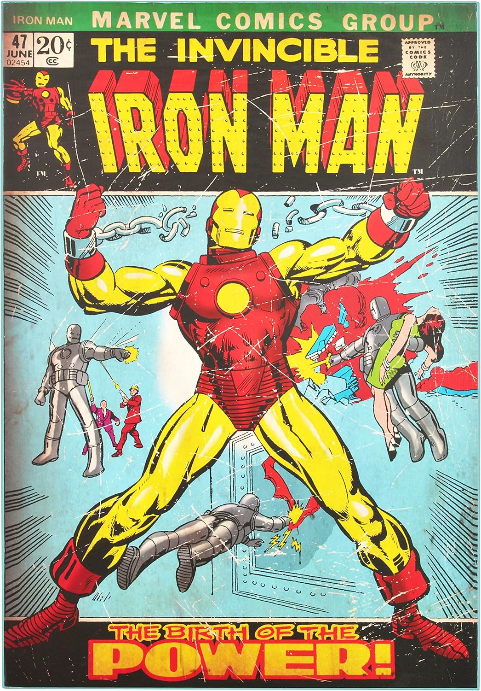
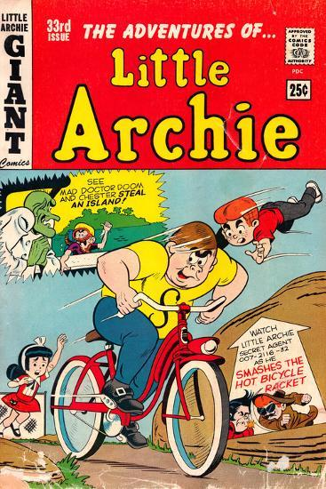
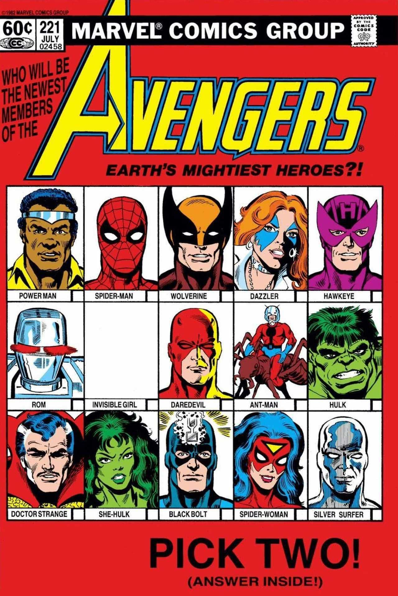
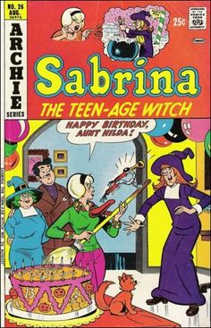
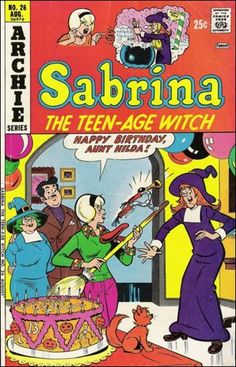

Comics
The Encyclopedia Britannica defines comics books as a "bound collection of comic strips, usually in chronological sequence, typically telling a single story or a series of different stories."
The comic book art form consists of sequential juxtaposed panels that represent individual scenes. Panels are often accompanied by text and dialogue in the way of text bubbles which is emblematic of the comics art form.
Comic books are best known to feature superhero and supervillain stories. The top two names, Marvel Comics and DC Comics, have their characters in specific universes where we are lead to believe that all the characters actually live or have lived in the same place and time. This gets a little confusing as there are many renditions of popular characters and their stories change over generations.
The paper and style of physical comic books have changed over the years. What we now consider "retro comics" were originally done with Ben-Day dots while now we have sleek and shiny paper opposed to the trade paper backs. There is also the name change of how many publishers are choosing to drop the name comics and switch over to "graphic novels" due to the change in appearance and marketing strategies.
Different Types of Comic Books
These are a few predominate types of comic book types:
- Superhero
- Slice-of-Life
- Humor
- Non-fiction
- Science-Fiction/Fantasy
- Horror
As the gap between graphic novels and comics grows smaller it becomes harder to determine which is which outside of who publishes and what it is directly called on the book.
Retro or Vintage Comic Books:
   

Retro or vintage comic books are distinguishable by their bright covers, thin paper, common use of Ben-Dots and cartoony style. When comic books first became popular they were not only superhero comics; there are popular comics about Sabrina, Archie, crime, romance and more. The superhero comics are the ones that have aged well over the years and with every new generation of audience, the stories are appealing, the art captivating, and the length manageable enough for a quick and satisfying read.
Comics and Movies
There are two major companies who produce both comics and movies for their superheroes, Marvel and DC Comics.
In the Marvel Cinematic Universe (MCU), the heroes and villains all live in the same universe and can be seen interacting with each other, this started with the Fantastic Four back in the 1960s and has continued ever since. The movies in MCU actually do have a chronological order despite being set in different time periods, centered around different characters, and outside of major events. The most current event, "The Blip", is what is driving the plots for the most recent films (as of 2020). For fans of the comic books, watching the films and comparing how the characters are portrayed often leads to joy or anger. Although, if you've read the origin stories and plot lines of all of the characters you will see Easter eggs hidden in films that nod to the original comic or foreshadow something that has not happened yet (in film). The story of Scarlett Witch is presented in WandaVision where things are not as they seem and lead fans to turn to the comic books and speculate what is truly going on in the show. While the movies are a good homemade to the comic book heroes they also allow the actors to recreate the character and given them a new sense of depth furthering their storyline.
DC Entertainment is in charge of the superhero movies based off of DC Comics, they were the first of the two to start making movie adaptions. Superman and Batman were the first to make it to the big screen back in the 1950s and 60s beating Marvel by decades. Like Marvel, DC has their own DC Universe (DCU) where all of their heroes and villains reside as can be seen in Suicide Squad. Characters like Batman, Superman, The Joker, and Wonder Woman are some of the most popular and recognizable names in comics but then why do the movie adaptations get such a bad rep? Over the years DC Entertainment has promised to "get it right" when making their films but have always ended up with a subpar version of the character and the DC Universe. Marvel took off in the early 2000s with their films and have been going strong ever since. The main difference is in the writing. When adapting a comic book to film you have to get the story just right which means you have to know the story. The advantage Marvel had was that the creator, Stan Lee, also took part in directing and the writing process for the films (not to mention the necessary cameo). Overall, the quality of the story is just poor in many DC movies and this leads to their decline and what may even turn some away from picking up the comic book.